在之前的《Servlet与Tomcat运行示例》一文中，给大家带来如何在Tomcat中部署Servlet应用的相关步骤，本文将就上文为基础，开始Tomcat源码分析之旅，我将详细的分析Tomcat的启动过程及运行原理。本文将是最基础的一节课，也就是本地编译好Tomcat源码，为后面的分析做基础！
我们去Tomcat官网下载最新的Tomcat源码包，目前最新的版本为9.0.26，我们下载其source源码包tar.gz版本，如下图：
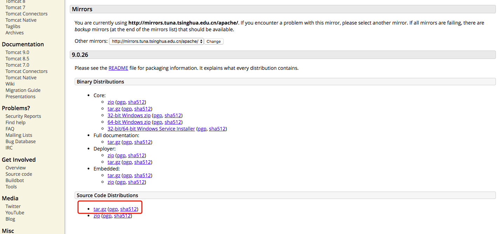
解压源码包apache-tomcat-9.0.26-src.tar.gz之后得到的内容为：
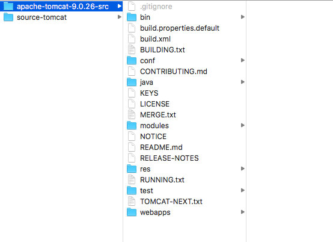
因为要使用Maven的方式导入Tomcat项目，故需要添加相应的maven依赖，此处添加pom.xml文件，该文件内容如下：
<?xml version="1.0" encoding="UTF-8"?>
<project xmlns="http://maven.apache.org/POM/4.0.0"
xmlns:xsi="http://www.w3.org/2001/XMLSchema-instance"
xsi:schemaLocation="http://maven.apache.org/POM/4.0.0 http://maven.apache.org/xsd/maven-4.0.0.xsd">
<modelVersion>4.0.0</modelVersion>
<groupId>com.github.sources</groupId>
<artifactId>source-tomcat</artifactId>
<version>9.0.26</version>
<name>source-tomcat</name>
<dependencies>
<dependency>
<groupId>junit</groupId>
<artifactId>junit</artifactId>
<version>4.12</version>
<scope>test</scope>
</dependency>
<dependency>
<groupId>org.easymock</groupId>
<artifactId>easymock</artifactId>
<version>3.5.1</version>
</dependency>
<dependency>
<groupId>org.apache.ant</groupId>
<artifactId>ant</artifactId>
<version>1.10.1</version>
</dependency>
<dependency>
<groupId>wsdl4j</groupId>
<artifactId>wsdl4j</artifactId>
<version>1.6.2</version>
</dependency>
<dependency>
<groupId>javax.xml</groupId>
<artifactId>jaxrpc</artifactId>
<version>1.1</version>
</dependency>
<dependency>
<groupId>org.eclipse.jdt</groupId>
<artifactId>org.eclipse.jdt.core</artifactId>
<version>3.18.0</version>
</dependency>
<dependency>
<groupId>org.eclipse.jdt.core.compiler</groupId>
<artifactId>ecj</artifactId>
<version>4.6.1</version>
</dependency>
</dependencies>
<build>
<finalName>Tomcat9.0</finalName>
<sourceDirectory>java</sourceDirectory>
<testSourceDirectory>test</testSourceDirectory>
<resources>
<resource>
<directory>java</directory>
</resource>
</resources>
<testResources>
<testResource>
<directory>test</directory>
</testResource>
</testResources>
<plugins>
<plugin>
<groupId>org.apache.maven.plugins</groupId>
<artifactId>maven-compiler-plugin</artifactId>
<version>3.6.1</version>
<configuration>
<encoding>UTF-8</encoding>
<source>1.8</source>
<target>1.8</target>
</configuration>
</plugin>
</plugins>
</build>
</project>
使用IDEA开发工具，以Maven的方式导入tomcat工程，导入之后工程结构如下：
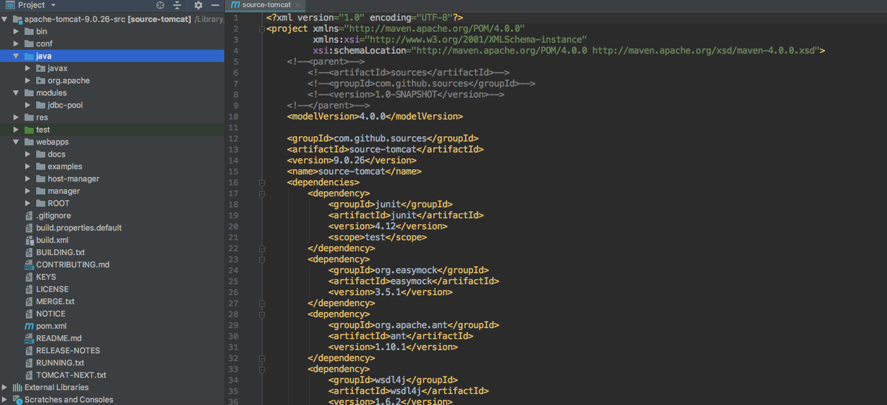
运行org.apache.catalina.startup包下的Bootstrap类的main方法
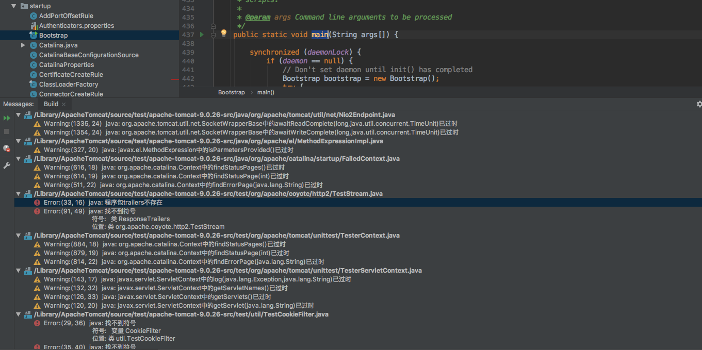
此时，我们发现了一些错误，下面我们来解决这些错误。
我们可以去webapps/examples/WEB_INF/classes/trailers 目录下找到该类，我们将这个类复制一份到test下：
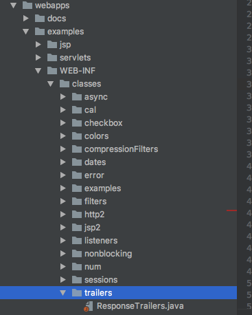
拷贝完成之后的情况如下：
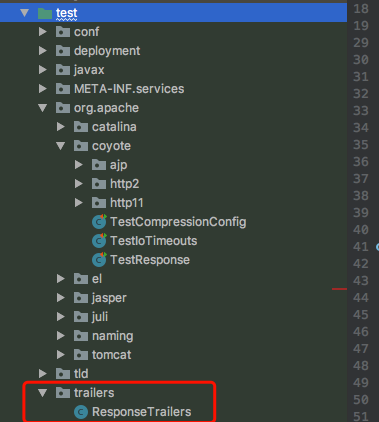
同样，我们去将home\webapps\examples\WEB-INF\classes\util\CookieFilter.java文件拷贝到 test\util 目录下:
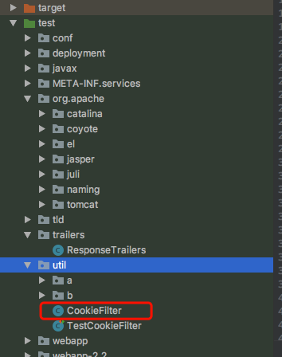
在解决上述3.1和3.2的问题之后，又出现了下图所示的问题：
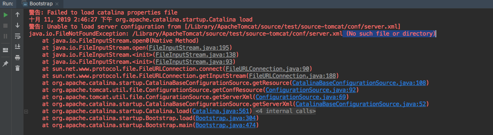
/Library/ApacheTomcat/source/test/apache-tomcat-9.0.26-src，故而添加参数内容为：-Dcatalina.home=/Library/ApacheTomcat/source/test/apache-tomcat-9.0.26-src， 如下图所示：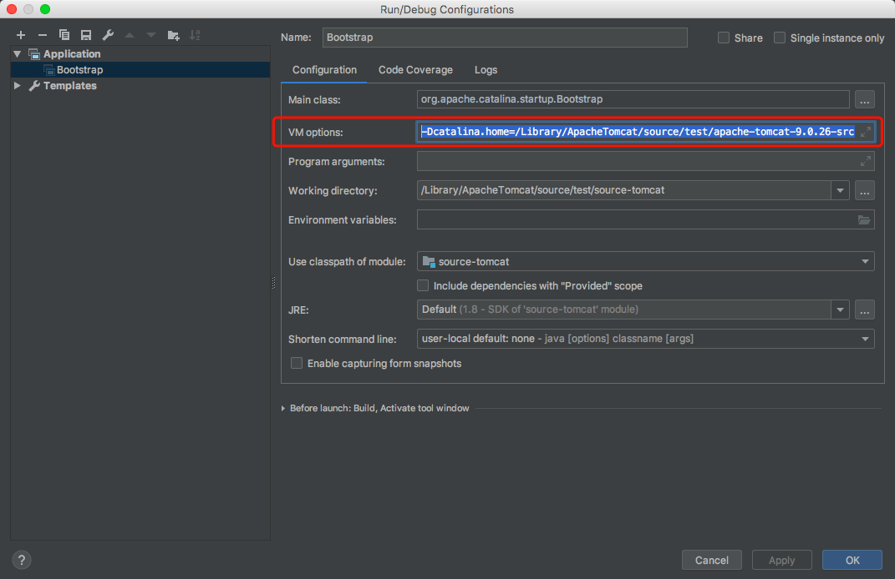
在解决上述3.3问题之后，再次启动Bootstrap类的main方法，程序出现以下错误信息：
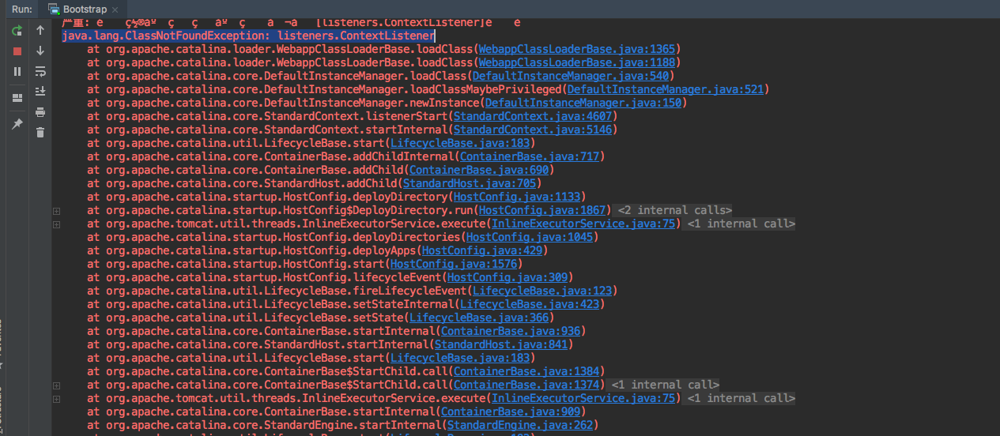
在解决上述问题之后，启动Bootstrap类的main方法，程序正常启动，此时我们在浏览器访问127.0.0.1:8080， 程序出现以下错误信息：
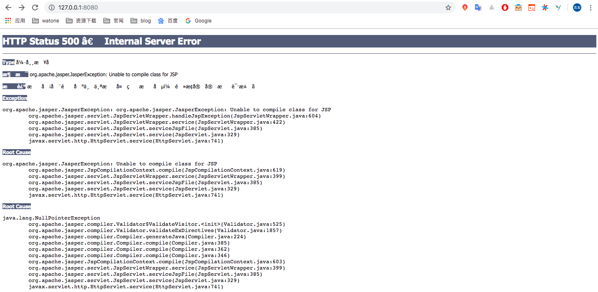
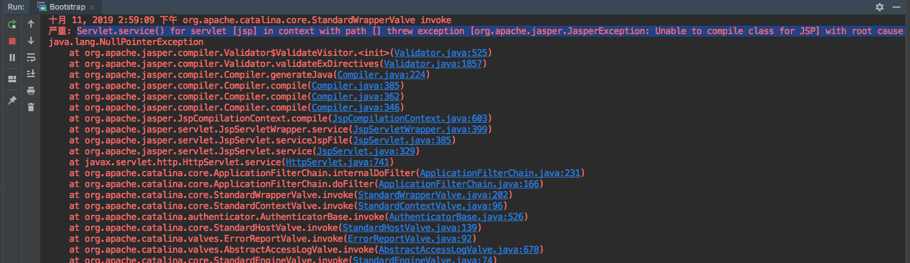
context.addServletContainerInitializer(new JasperInitializer(), null);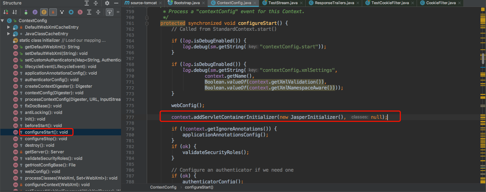
添加之后，再次启动main方法，浏览器输入127.0.0.1:8080得到的结果为Tomcat的界面：
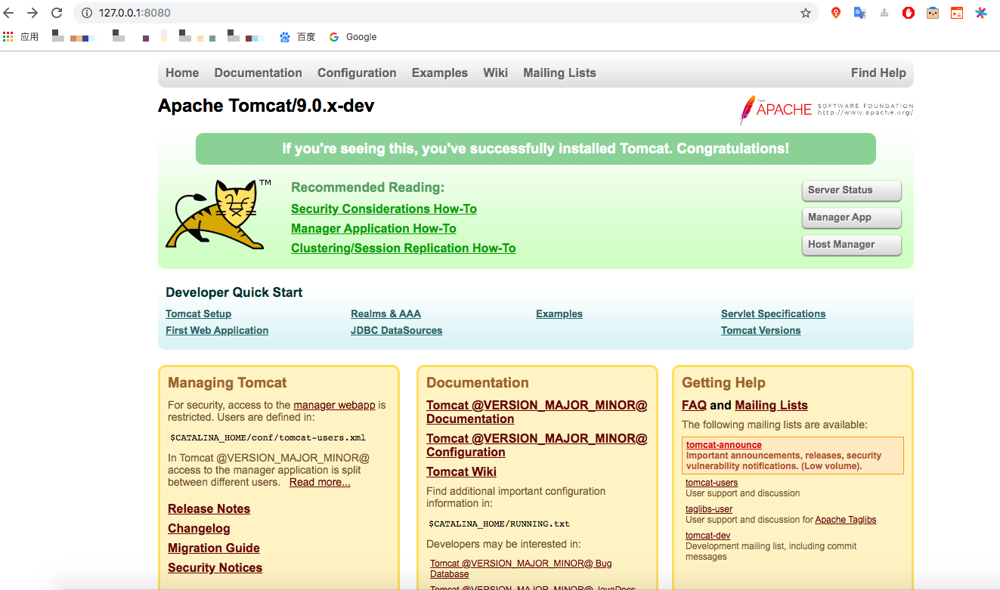
启动的日志中含有很多的乱码，虽然对程序整体并不影响，但是在之后查看日志时，还是影响比较大的，先看下日志乱码的情况：
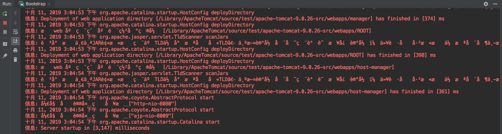
-Duser.language=en -Duser.region=US -Dfile.encoding=UTF-8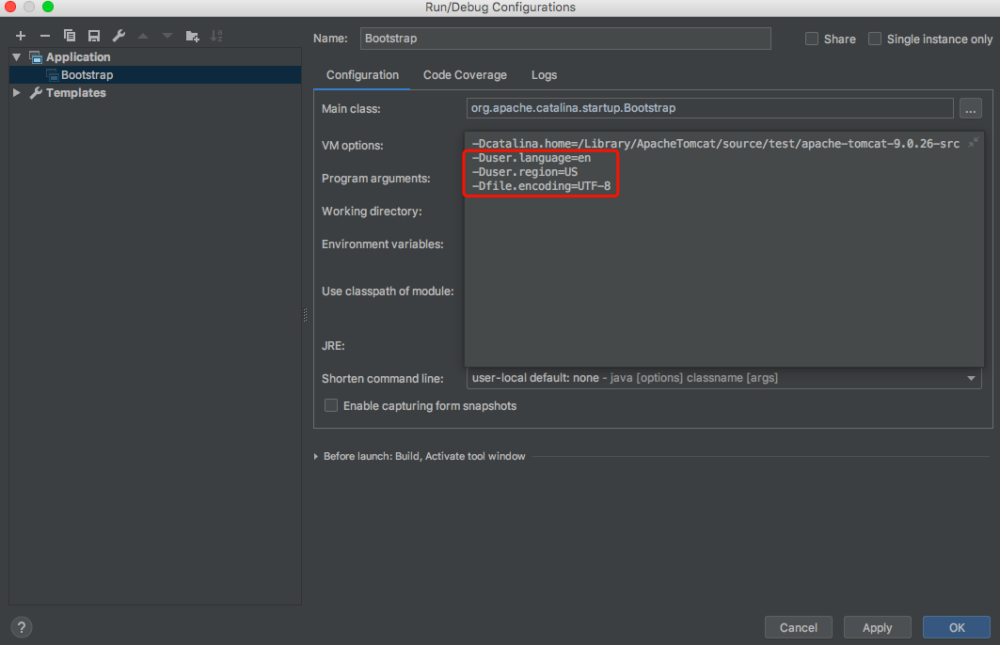
再次运行main方法，程序日志正常显示：
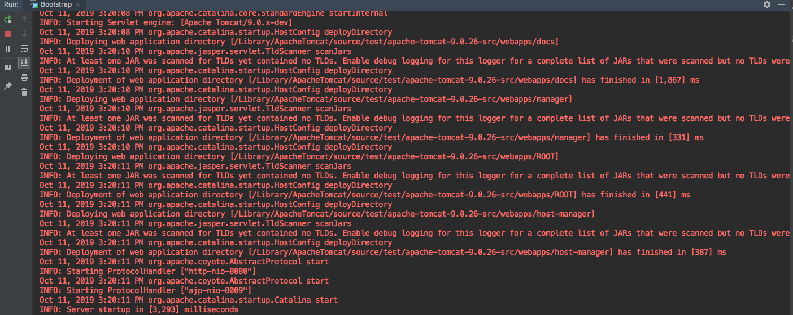
至此，我们已经将Tomcat的源码导入到IDEA的工具中，也解决了一些问题，之后，我们将利用这份源码来分析Tomcat的启动及运行原理。